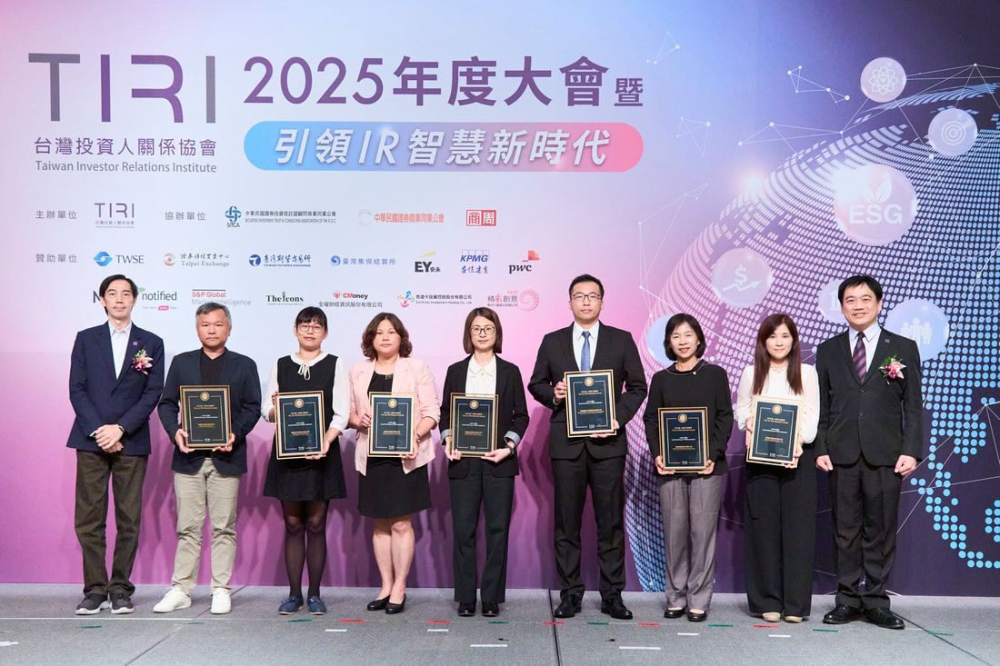

「期貨人季刊」第89期 專欄：ESG在地發展
由黃英記 矽創電子暨昇佳電子投資人關係、集團企業永續辦公室 處長／台灣投資人關係協會理事提供
從IC設計業的投資人關係看企業永續發展
從產業觀點談起
臺灣近七成的上市櫃公司對企業永續發展已有相當的涉入和準備。
主管機關對上市櫃公司的監管朝向和投資人「共同監管」數量龐大的上市櫃公司，這是世界潮流、也是企業永續發展的終極目標。
IC設計行業的產業特殊性
企業永續發展亦稱之為Sustainability或是ESG，為近年資本市場的重大趨勢。在半導體產業中的IC設計行業多屬無晶圓廠公司（A fabless company），也就是說，無晶圓廠IC設計公司從晶圓製造、晶片封裝、測試，甚至上下游運輸皆由代工廠及外包商執行，屬於輕資本資出的營運型態。也由於無晶圓廠IC設計公司的價值產出主要在智慧財產，工程設計的場域以辦公室或實驗室為主，所以在能耗的本質上，是屬於低耗能、低碳排、低量廢棄物的作業型態。以環境Environmental、社會Social、公司治理Governance三大區塊為基礎的企業永續發展指標而言，相對於有廠或多分店型態的產業，無晶圓廠IC設計公司擁有降低了環境指標和溫室氣體排放壓力上的先天優勢；但也更加凸顯公司在社會、公司治理這兩大區塊的表現。
臺灣的十年 企業永續發展足跡
回顧過去十年，臺灣上市櫃公司的主管機關金管會、證交所以及櫃買中心，以落實上市櫃公司的公司治理架構為起點，陸續頒布政策藍圖與時間表，積極推進上市櫃公司的改善行動，是臺灣上市櫃公司在全球指標保持前段班的重要推手，成果令人肯定。回溯2013年，證交所依據金管會發布「2013強化我國公司治理藍圖」，對所有上市櫃公司展開首屆「公司治理評鑑」，每年度更新約80個指標，由公司治理的指標為起點，逐年擴大涵蓋環境、社會、公司治理三大區塊的企業永續發展指標，是臺灣啟動企業永續發展的一大步。2017年起，金管會推動上市櫃公司發布或自願發布「企業社會責任報告書」，（註：2021年起更名為「企業永續發展報告書」）並發布時間表，以優先列管特定產業和資本額規模劃分實施階段，預告最晚2025年起，所有上市櫃公司需要編製並發布永續報告書。
臺灣企業永續發展的現況
根據證交所公司治理中心統計公開資訊觀測站申報永續報告書之數據，截至2022年，上市公司共640家，上櫃公司共256家，總計896家已發布永續報告書，其中，64%的上市櫃公司優於時間表自願揭露，26%已獲得第三方機構擔保。可得到具體的結論是，臺灣近七成的上市櫃公司對企業永續發展已經有相當程度的涉入和準備。由此可見，還沒發布永續報告書的公司，需要加緊腳步啟動。
2020年8月，金管會發布公司治理3.0永續發展藍圖，用以提高上市櫃公司資訊透明度、強化董事會職能、強化利害關係人溝通、引導盡職治理為目標。並於COVID-19 期間，積極導入《氣候相關財務揭露TCFD》和《溫室氣體盤查》報告。2023年最新的舉措是《國際財務報告準則》永續性揭露。由於主管機關的積極驅動，造就了臺灣企業在全球企業永續發展行動的各項指標排名，均質傑出的表現。
主管機關的作為與視角
2013年，金管會公佈「公司治理五大計畫」，並開始推動公司治理、企業永續發展藍圖，制定指引規範，實施的行動如下：
2013 啟動「公司治理評鑑排名」，規範上市櫃公司走向公司治理。
2015 編製「臺灣公司治理100指數」，勞退基金優先持有公司治理優等評級的股票。
2015 要求編製「企業社會責任報告書」，開始從公司治理面（G）擴大到環境保護面（E）以及社會關懷面（S）。
2016 發布「機構投資人盡職治理守則」，鼓勵機構投資法人透過股東會投票，監督公司決策。
2018 推動股東會電子投票，增進股東參與股東會可行性。
2021 「企業社會責任報告書」更名為「企業永續發展報告書」，增加非財務與內控制度揭露。
2024 將「公司治理評鑑排名」規劃升級為ESG評鑑排名。
主管機關推行公司治理的用意
根據觀察，主管機關由規範公司治理的單一面向開始，逐步擴展到企業永續發展（E, S, & G）的三個面向；另一個重大的改變是，當企業因落實企業永續發展而逐步走向制度化，營運風險開始降低，主管機關對上市櫃公司的監管也發生態度轉變。朝向和投資人「共同監管」數量龐大的上市櫃公司。這是世界潮流、也是企業永續發展的終極目標。
主管機關引入股東、獨董共同監督上市櫃公司
企業永續發展中的「公司治理」表現等於企業長期競爭力：過去幾年開始，機構法人股東主動關切持股公司的公司治理議題，如資訊透明度、董事專業職能、資金貸與的風險性、籌資的訂價與理由的合理性、領導人決策品質、員工激勵制度、執行長薪酬的合理性、內控制度健全度、供應鏈參與永續行動等，讓企業的監管回到制度面。此重擔不只落在主管機關肩上，股東、獨董也有責任共同監督上市櫃公司。這說明了永續發展對全球企業的良性影響以及其推動的必要性。
永續發展過程遇到哪些問題？如何溝通
如何看到企業永續發展的本質？它的核心目的為何？管理層如果能解讀永續指標對公司
的意義、解讀主管機關推行永續發展指標的目的，會有全新的視角展開行動。
2012開始，筆者工作內容由投資人關係（IR）和企業關係（PR）為起點，2013年隨著主管機關推動公司治理與公司治理評鑑，其中的資訊揭露等指標與IR工作範圍直接相關，於是開始將公司治理的各項指標納入管理範圍。2015年，主管機關推動編制「企業社會責任報告書」，新增了社會關懷面（Social）的「社會公益贊助」範疇，我也進一步將社會關懷提案的評選納入職責範圍。
一、如何解讀主管機關推行的永續發展指標
當開始在公司內推動企業永續發展，常遇到的障礙是，高層將企業永續發展直接解讀為「社會公益贊助」而心生抗拒。認定這是營運外、本業外的財務負擔，且新增的費用與獲利目標發生衝突，也使股東對於公司投注資源在非本業的決策心生疑慮。那什麼是真實的企業永續發展全貌？它的核心目的為何？以下是我與公司經營團隊溝通時提出，企業永續發展指標的意義和目的：
1. 協助公司制度化
• 永續指標使公司制度化，使董事會更專注於重大決策，減少日常管理。
• 公司治理的董事會專業職能要求，使（獨）董事成為董事長的顧問，增進決策品質。
2. IC設計業以資本市場視角 重要性以G-S-E排序
• 尋求企業在永續與營運效率的甜蜜區域，創造最高價值。
• 無廠IC設計公司的環境風險低，需要投入的資源低。
• 公益贊助為選擇性指標，且非企業永續發展初步行動的重心，容易達成一致共識。
3. 報告書當作企業年度健檢
• 永續指標即為營運風險指標，投資人及經營團隊視為每年企業健檢報告。
• 供應鏈淘汰賽：揭露的永續指標已成為與一線品牌客戶商業往來的合格門檻。
• 機構投資門檻：公司發行企業永續報告書已成為政府基金、投信基金與退休基金的投資買入門檻。
4. 臺灣是落後指標，排名前20%才有競爭力
• 被動跟隨：金管會及證交所為歐美資本市場的監管跟隨者，為了滿足外資選股、股東會投票策略，被動跟隨歐美市場規範。
• 處於落後指標：比較國際評級機構指引，國內公司治理評鑑指標略晚於歐美，平均晚1到3年。
• 為必要指標跟進者：主管機關推動必要指標，指標強度較溫和。
5. 視為法律遵循風險
• 高達成率公司治理評鑑各項指標，上市櫃公司的重視程度應比照法令遵循的強制規範。
• 上市公司高達成率的治理評鑑指標，應類比為法律遵循的強制條款。
• 各指標企業提早行動，享有寬容度大、執行成本相對低、進入門檻低、寬容修正期長、受市場注目度高等優點。
二、監理預期逐步收緊公司治理（G）
如興財務危機案引發證交所、櫃買強化監理13大措施，逐步收緊監理。
三、如何說服企業高層推動企業永續發展、關鍵訊息是什麼？
• 推動永續發展帶給公司的好處：透過永續指標完善內控制度。
• 提早行動，外部期待門檻較低。
• 提早導入系統，集團下放子公司的分擔成本較低。
• 視永續指標為公司建構長期競爭力的轉換器。
• 定期對標同業、形塑追求卓越的企業文化。
• 成為敏捷（agile）企業。
• 減少董事會監督的負擔。
四、管理層如何解讀永續指標？
展開金管會公司治理3.0的指標來理解對公司的正向影響：
• 增進董事會決策品質：董事出席率、績效評估、認證、董事成員專業、持續進修課程。
• 增進公司透明度：揭露重大訊息、財務、發布永續報告，強化與資本市場互動。
• 永續報告重大議題調查：提供利害關係人的溝通管道與反饋。
• 股東用投票和發言支持或反對公司決策。
• 達成公司治理門檻：政府基金投資、企業上市門檻、供應鏈遴選標準、採購標準等納入永續指標為篩選門檻。
五、公司如何滿足ESG揭露的監理要求？
當公司收到政府的ESG揭露政策和時間表時，應召開內部會議來決定何時、由誰以及如何執行。
例如，主管機關要求在董事會會議上每季更新溫室氣體盤查報告進度。這意味著如果公司不採取行動，在董事會就沒有可更新的內容。這是來自主管機關的軟性推進。筆者以過去為執行主管機關的政策經驗，成為先行者有下列優勢，是較佳的選擇：
• 內外部的期望值低：歷經學習曲線事情才能變得完美。所以第一年目標是先交付，第二年開始的目標是改進。
• 成本降低：外部顧問和第三方鑑證費用逐年上升。如果儘早採取行動，長遠來評估反而省錢。
• 更長的學習緩衝：公司可以計畫以3-5年為期逐步完善。如果企業選擇在最後一年才執行，常面臨法規到期的時間壓力、來自利害關係人的較高標準；而提早採取行動的企業，已進入正常運作的改善週期。
• 風險管理效益：儘早識別和管理永續風險，提早因應降低風險曝露。
舉個例子，臺灣主管機關及國際ESG評級機構因為重視董事會的多元化和包容性，因而制定了一定比例，如三分之一的董事會成員應由女性擔任、獨董人數必須達到董事會人數的一定比例，如三分之一等指標。如果得知這幾題的指引有幾年需達到二分之一才合規，後來又修正，就理解這個標準並非固定。如果公司獨立董事專業背景符合規範並且一定比例的人數的任期未超過規範，外資將透過代理機構投下贊成票，ESG評級機構也會給分。如果公司暫時無法遵循，應該在股東大會議事手冊上解釋原因並揭露未來如何改善得以符合指引，必要時也可以尋求代理機構顧問（ISS-Corporate, Alliance Advisors）的協助，使董事會成員不但擁有監督公司的專業背景，並符合公司治理的多元與包容規範指標。
因此，身為永續發展辦公室的主管，每年證交所公司治理小組發布新年度的指標、或是國際機構ISS或Glass Lewis發布臺灣地區董事多元化的新指引時，需注意的指標，並建議向高層報告，討論執行可行性以及時間表。
企業永續發展 x 投資人關係
企業永續發展興起，機構投資人需要與企業議合了解永續發展現況，正在改變IRO（投資人關係長, Investor Relations Officer）的專業涵蓋面。「投資者關係」和「企業永續發展」兩個專業的相互交集一直是熱門議題，對IRO來說，是個值得積極擁抱的機會。
2012年，我離開了14年的外商銀行個人金融處的金融科技領域，轉換到電子製造下游的上市公司擔任投資人關係以及企業行銷。時值金管會開始推動公司治理評鑑，尤其側重和投資人關係直接相關的「資訊揭露」。2013年開始，我主動將證交所公司治理評鑑納入工作範圍，並設定年度推進目標，經過幾年努力，成功擠進上市公司排名前5%。
2015年，當我們掌握了「公司治理」，金管會又推動「上市櫃公司發布企業社會責任報告書」。面對這個龐大的專案。我和團隊開始參加論壇及分享會、研究以既有的「公司治理」的經驗，擴展到環境保護（E）、社會關懷（S），並靠著摸索，兩個人獨力完成企業社會責任報告書初稿。並於2017年完成第一本報告書首發。由於缺少顧問協助，所以我們希望透過外部查證，讓查核師指正這本報告書的缺點。
由於這些經驗，2018年我加入一群有志推動投資人關係專業的IRO，共同成立台灣投資人關係協會，並任創始理事，鼓勵投資人關係專業人員擁抱新興的企業永續發展。此舉的優點是，IRO對外表達公司在永續發展的現況時，能和公司長期策略保持一致性。2022年，再
度轉職到電子業上游的IC設計公司，帶領投資人關係暨企業永續辦公室，整合投資人關係和企業永續發展成為一個部門。回顧我的職涯發展，正好碰上投資人關係專業和企業永續發展興起的時機，我很慶幸和這股潮流一起前進。
過去幾年我在投資人關係長（以下簡稱IRO）社群常鼓勵IRO在公司爭取主導或共同主導公司的企業永續發展任務，我們來分析，IRO主導或監督公司ESG事務具有哪些優勢？
• 全方位視角：IRO的職位是少數公司內能提供360度的觀點、參與議題討論時，可透過已經揭露的財務數據、長期策略、外部同業概況，與高層與經營團隊討論或提供風險評估建議參考的角色。
• 與高層跨部門溝通：IRO與管理高層、業務主管一般有定期會議，並持續與研發、產品發展、供應鏈管理、法務、環安衛、財會、資訊等部門保持互動。這使IRO主導企業永續發展的各項專案時，例如協助董事會下成立企業永續發展委員會、成立風險管理委員會、跨部門協作企業永續發展報告書、執行溫室氣體盤查報告書、執行公司治理評鑑，以及執行氣候財務風險揭露（TCFD）時，能向管理層提供短中長期計畫以及評估建議，在跨部門協商時，也能以360度的全視角提出公司內部共同的核心價值、協助共識達成並順利推動。
• 擴大IRO的角色和能力：IRO的工作範疇隸屬於企業永續發展的公司治理（G），因為IRO熟悉公司組織架構、理解管理團隊、各部門主管、同業概況、產品製程、客戶與供應鏈組成等各角色的考量，能力上具備整合財務數據、高階策略、風險評估意識和資訊揭露領域等多種技能。這樣的背景加上善於溝通，使推展企業永續任務變得比其他人容易。
• 數據敏感度：專業且資深的IRO對所在公司的各面向有如數家珍的熟悉感，包括能信手捻來公司關鍵數據以及已揭露的內控制度、財務數據、潛在的風險因子、同業現況、最佳實務等。許多中小型公司，IRO是帶領永續報告專案的最佳人選。主要是IRO在業務上和人資長、財務長、供應鏈主管、環安衛主管、資訊長、研發長、行政主管和法務長等有一定程度的跨部門溝通與合作。IRO能直接向投資機構的永續發展分析師提供現況和未來發展路徑、收集股東在營運及企業永續上的反饋，向永續發展委員會報告，以協助擬定未來企業在永續上的方向。
• 擴大組織分工：企業永續發展的興起使IRO需要對外回應公司在永續發展上的表現。也因此，IRO可以擴大組織，例如整合投資人關係（IR）、企業關係（PR）和企業永續發展辦公室（ESG）合併為單一部門。優點是，公司對外溝通能以統一一致的基調和策略涵蓋於在所有的對外投資人文件、股東大會年度報告、永續報告書、網站公告和新聞稿等。讓接觸任何管道的投資人和利害關係人都理解，公司正朝一個方向前進。其次，將IR, PR和ESG整合為一個小組，每個人職務分工但又能相互代理，運作的彈性和效率更好。我們集團約一千人，以我目前的4人團隊為例，除了我以外，一名負責S/G和PR，一名負責E和溫室氣體盤查報告書專案和IR，一名負責永續發展報告書專案和IR。組織整合有其優點，而IRO是否帶領永續辦公室，取決於IRO本身能力和企圖心；公司需要評估將投資人關係（IR）、企業關係（PR）和企業永續發展（ESG）合併為一個團隊，是否能取得綜效；這些端看公司的規模、分工現況、組織的複雜性而定。
• 回饋外部投資人對管理團隊的期待：身為中型公司的IRO，又同時帶領永續辦公室推動永續專案，優點是我可以深入公司的永續行動和未來規劃，能向投資機構的永續發展分析師提供永續發展的進程和未來的發展路徑，並收集反饋向永續發展委員會報告，以協助擬定管理層未來在永續發展的推進方向。
現階段企業 IR 與 ESG的挑戰
現在是投資人關係與企業永續發展相互影響疊加的時刻
提升國際機構評級：Sustainalytics, MSCI, S&P Global CSA, FTSE, DJSI, CDP等是國際主要的永續評級機構。除了證交所的公司治理評鑑，上市櫃公司可以透過參與上述機構聯繫，了解參加資格，並線上完成問卷取得成績。公司內部團隊成員在填答的過程中，也能以更高且多元的角度了解永續評級，以及全球永續發展的指引與趨勢。
追求最適 保持領先：有個問題值得思考：「是否公司應不惜代價追求企業永續發展的頂峰？」答案是否定的。公司投入企業永續發展，達個面向的對應指標並取得佳績，是追求營運健康的展現。但每個公司因為所在的產業特性、擁有的營運規模，以及經歷的生命週期不盡相同，較佳的做法是，經營團隊做好內部評估，在「永續發展目標」和「投入的資源」，取得最有利的平衡點，規劃出達成最大綜效的執行路線圖，這是最適的作法。如何保持領先？筆者最愛採用的方法是：(1)對標同業的進展狀況（benchmark）、(2)參考全球企業最佳實務（best practice），且定期檢視，這都是將公司維持在領先又最適的做法。
納入被動基金：上市櫃公司被納入被動基金（ETF），有許多優點，包括能增加機構投資法人的長期持股比例、降低股價波動、增加流通性，並能吸引主動基金及個人投資人的關注。然而，吸引被動基金有兩個重要因素：(1) 公司做好企業永續評量，成績未達到一定門檻，不會被納入成份股。(2) 具備一定的市值規模，有一定的市值規模才有健康的流動性，達到ETF的納入門檻。
完善揭露 事半功倍：公司上市櫃的目的在於與資本市場互動，達成永續經營、多元籌資、低資金成本、吸收人才，以及提升企業形象的宏大願景。這些目的會相輔相成，但達成這些目標的基礎條件是「資訊揭露」。唯有公司公開揭露營運狀況、長期策略、產品發展、未來展望，並有一位投資人關係的專職人員照顧投資人，能協助公司的應有價值在市場上被發現。公司身為資本市場的一員，在公司網站完善資訊揭露，對公司而言，是完全免費又不分時區、地理限制的自我行銷平台，讓投資人能在網站輕易取得公司的投資價值、長期策略以及產業資訊的直接工具。因此，舉凡股東會年報的內容、企業永續發展的現況、最新產品資訊、投資人簡報揭露在公司的網站，能讓關注公司的投資人和利害關係人事半功倍地找到即時正確的資訊，也是提升企業價值的基礎。
結語
處在變動的市場環境，投資人關係和企業永續發展都需要持續與時俱進。企業永續發展上，建議企業早一步因應趨勢變化，並善用永續行動降低企業風險、納入長期策略；投資人關係上，對市場保持資訊透明、增加與投資人的溝通，這些作為能協助企業順應趨勢、並增強市場競爭力。

筆者 黃英記
現任
矽創電子暨昇佳電子投資人關係、集團企業永續辦公室 處長/台灣投資人關係協會理事
獎項
2023 榮獲台灣投資人關係協會2023年度TIRI Award，年度最佳投資人關係企業—上市公司大型市值，年度最佳投資人關係專業人士 — 黃英記
2022 美國《機構投資者》Institutional Investor 票選5項亞洲第一：最佳投資人關係專業，最佳投資人關係策劃執行，最佳投資人關係團隊，最佳ESG
2019, 2021 兩度榮獲英國 IR Magazine 大中華區票選「大中華地區科技業最佳投資人關係企業」，並兩度入圍「大中華區最佳投資人關係長」
|